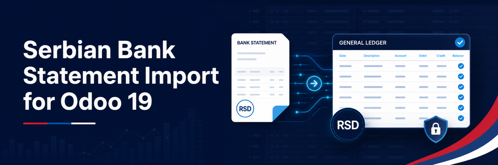

Import Serbian bank statements into Odoo
Convert commonly used Serbian electronic-banking exports into Odoo bank statements with deterministic parsing and duplicate protection.
Supported formats
- Halcom Hal E-Bank fixed-width and extended text exports.
- Asseco statement and payment-notification XML.
- ROL dinar and foreign-currency XML statements.
- RSD and supported foreign-currency journals.
Designed for accounting workflows
- Uses the standard OCA bank-statement import framework.
- Preserves payment references and Serbian payment-purpose data.
- Stable transaction fingerprints prevent duplicate imports.
- Works on Odoo 19 Community and Enterprise.
Privacy
Statement files are parsed locally inside Odoo. The module does not upload bank data to Coriolis Lab or any external service.
Support and license
Support: odoo@coriol.co. Free software distributed under LGPL-3.